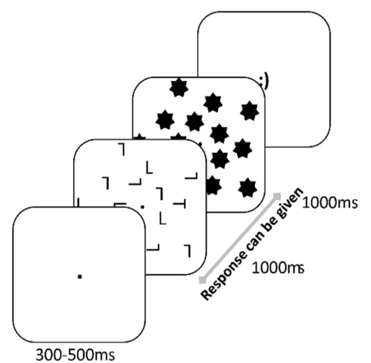
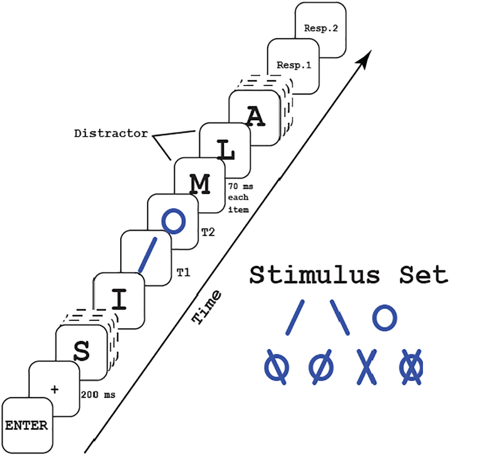
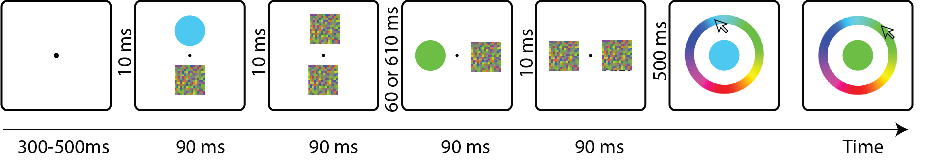
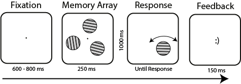

Cognitive Neuroscience
Rijksuniversiteit Groningen, Groningen, the Netherlands

Rijksuniversiteit Groningen, Groningen, the Netherlands
Brooklyn College, City University of New York, NY, the US
Ankara University, Ankara, Turkey
New York University
Rijksuniversiteit Groningen
Animal vision lab, Brooklyn College, CUNY

Theories of visual working memory have seen significant progress through the use of continuous reproduction tasks. However, these tasks have mainly focused on studying visual features, with limited examples existing in the auditory domain. Therefore, it is unknown to what extent newly developed memory models reflect domain-general limitations or are specific to the visual domain. To address this gap, we developed a novel methodology: the Auditory Reproduction Task (ART). This task utilizes Shepard tones, which create an infinite rising or falling tone illusion by dissecting pitch chroma and height, to create a 1-360° auditory circular space. In Experiment 1, we validated the perceptual circularity and uniformity of this auditory stimulus space. In Experiment 2, we demonstrated that auditory working memory shows similar set size effects to visual working memory—report error increased at set size two relative to one caused by swap errors. In Experiment 3, we tested the validity of ART by correlating reproduction errors with commonly used auditory and visual working memory tasks. Analyses revealed that ART errors were significantly correlated with performance in both auditory and visual working memory tasks, albeit with a stronger correlation observed with auditory working memory. While these experiments have only scratched the surface of the theoretical and computational constraints on auditory working memory, they provide a valuable proof-of-concept for ART. Further research with ART has the potential to deepen our understanding of auditory working memory, as well as to explore the extent to which existing models are tapping into domain-general constraints.
There is debate about whether awareness during visual perception occurs abruptly (all-or-none) or gradually. One influential view is the levels of processing (LOP) theory which states that visual awareness depends on the stimulus. Low-level stimuli, such as color, evoke gradual awareness, while high-level stimuli, such as object identity, elicit abrupt, all-or-none perception. A critical source of evidence supporting LOP is that self-reported perceptual clarity measures reveal more intermediate values of perceptual clarity for low- (e.g. color) than high- (e.g. letter) level stimuli. Here we provide several pieces of evidence inconsistent with this theory. First, previous studies confound stimulus level with category-flatness. Does increased perceptual clarity of X versus blue reflect that a noisy perception of X is perceived as X due to large category priors for letter stimuli (e.g. there is no meaningful halfway point between X and M but there is between blue and red)? Consistent with this, when we generated a high-level stimulus set that lacked meaningful category boundaries (by morphing unfamiliar faces into a continuous space) our results revealed gradual awareness. Second, by varying foil-target similarity, we show that an assumption underlying perceptual clarity measures—that they measure stimulus clarity not the difficulty of perceptual judgments—is incorrect. Finally, existing studies do not equate performance. This is problematic because high-level stimuli have better performance, and the apparent all-or-none nature of categorical stimuli may reflect few intermediate perceptual clarity ratings due to high confidence. Consistent with this, preliminary data suggests gradual awareness for all stimuli, including letters, when task performance is equated across stimuli. Taken together, our findings reject the notion of separate awareness pathways for high- vs. low-level stimuli and suggest that gradual versus all-or-none perception depends on other methodological properties.
During perception, low-level features (such as color) are processed faster than high-level features (such as semantic properties). But what about accessing information from working memory? Recent work (Kong & Fougnie, 2021) has shown that search in working memory may be distinct from visual search regarding which features are most efficient. Further, research on long-term memory (Linde-Domingo, Treder, Kerrén, & Wimber, 2019) has shown that semantic information is retrieved more rapidly than perceptual information. However, it is not yet known whether semantic properties are accessed faster from working memory than perceptual attributes. In two experiments, participants were shown four images that were either animate or inanimate objects (semantic property) and which could be in the form of a photograph or drawing (perceptual property). Participants were pre-cued (perception – Experiment 1) or post-cued (working memory – Experiment 2) to the location of one of these objects. The cues were accompanied by either a semantic (“animate or inanimate?”) or perceptual (“drawing or photograph?”) question. Unsurprisingly, perceptual aspects were discriminated faster than semantic aspects when the information was available to visual perception. However, when the task required accessing no longer presented information from working memory, participants took less time to respond to semantic than perceptual queries. These experiments, together with other recent findings, point to a reversal of the processing hierarchy for perception and memory. While visual perception is feed-forward, retrieving information in memory might first involve accessing high-level properties such as semantic categories, followed by access to lower-level visual properties.
In the dynamic environment we live in, the already limited information that human working memory can maintain needs to be constantly updated to optimally guide behaviour. Indeed, previous studies showed that leading up to a response, representations maintained in working memory representations are transformed continuously. This goes hand-in-hand with the removal of task-irrelevant items. However, does such removal also include the representations of stimuli as they were originally, prior to transformation? Here we assessed the neural representation of task-relevant transformed representations, and the no-longer-relevant veridical representations they originated from. We applied multivariate pattern analysis to electroencephalographic data during maintenance of orientation gratings with and without mental rotation. During maintenance, we perturbed the representational network by means of a visual impulse stimulus, and were thus able to successfully decode veridical as well as imaginary, transformed orientation gratings from impulse-driven activity. The impulse response reflected only task-relevant (cued), but not task-irrelevant (uncued) items, suggesting that the latter were quickly discarded from working memory. By contrast, even though the original cued orientation gratings were also no longer task-relevant after mental rotation, these items continued to be represented next to the rotated ones, in different representational formats. This seemingly inefficient use of scarce working memory capacity was associated with reduced probe response times and may thus serve to increase precision and flexibility in guiding behaviour in dynamic environments.
Attentional scaling is a crucial mechanism that enables us to flexibly allocate our attention to larger or smaller regions in the visual field. Although previous studies have demonstrated the critical role of attentional scaling in visual processing, its impact on modulating visual awareness is not yet fully understood. This study investigates the adaptive control of attentional scaling and its influence on visual awareness in an attentional blink paradigm. Participants were required to attend to the first target’s location, which was manipulated either session-wise, trial-wise, or such that it could be learned across a block of trials. Discrete, all-or-none, awareness was expected when attention was allocated to a narrow area, while gradual awareness was expected when attention was allocated to a larger area. We used mixture modeling to assess second target awareness across these different attentional scales. The results revealed that participants could adaptively control their attentional scale both across stable sessions, and through (implicit) statistical learning in blocks of successive trials. This produced gradual perceptual awareness when the participants adopted a broad attentional scale, causing an attentional “blur”. However, trial-wise cues did not allow for attentional scaling, resulting in more discrete target perception overall, and an attentional “blink”. We conclude that the attentional scale is to some extent under adaptive control during the attentional blink/blur, where it can produce qualitatively different modes of perceptual awareness.
Classical concealed information tests (CITs) are in some circumstances able to detect concealed information, but are also vulnerable to countermeasures that participants can use to shield concealed information from detection. Rapid serial visual presentation (RSVP) has proven effective against such countermeasures, and can thus substantially reduce type-II error. Research to date has relied on classic univariate analyses of EEG data. Here we investigated whether RSVP-based CIT with multivariate analysis (decoding) of the EEG is potentially more effective for detecting ‘concealed knowledge’ of familiar faces. 29 participants searched for a target face in an RSVP task while a familiar face (one of their parents’ faces), or one of two control faces also appeared in the stream. Using neural-network decoding, we detected concealed information for each individual with an average hit rate of 61.8% and an average correct rejection rate of 72.7%, while accuracy was 49.4% (around chance level), when we decoded one control face from the other. In comparison, univariate analyses were only able to detect familiar face recognition in 19 participants. Our findings suggest that neural-network decoding makes RSVP-based CIT a more reliable method to detect concealed information.
Working memory research has largely focused on the visual domain, however, a full picture of working memory requires understanding its properties in other domains (e.g., auditory). Recently, working memory tasks have focused on circular reproduction tasks, since these allow the separation of putatively distinct mechanisms. Critically, such tasks have been leveraged only to study visual features (e.g., color & orientation) and have not been expanded to the auditory domain. Here we developed a new methodology: Auditory reproduction task (ART). To overcome the challenge of creating a circular space with auditory information, we relied on Shepard tones which create an illusion of infinite rising or falling tone frequency. We converted an octave range of Shepard tones to a 0-360° circular space. In the first experiment, we validated the perceptual circularity of the Shepard tones with multidimensional scaling. The perceptual space of the tones resembled an almost perfect circle. In the second experiment, we demonstrated that auditory working memory shows set-size effects, similar to visual working memory. Specifically, reproduction errors increased when participants were required to retain two (sequentially presented) versus one tone. Further, the preliminary results, when subjected to mixture modeling, revealed that precision decreased as a function of set size, demonstrating that the theoretical models on visual working memory can be used to study auditory working memory. Similar to visual working memory, we found evidence that the non-tested item influenced responses to the tested item—repulsion when the distance between the two random tones was small and attraction when the distance was large. Taken as a whole, these findings validate the ART task as a useful tool to study the properties of auditory working memory and how they may be similar to (or differ from) visual working memory.
Traditional concealed information tests (CIT) work fairly well, but people can still use countermeasures to avoid detection. Presenting the critical stimuli in rapid serial visual presentation (RSVP) while measuring EEG has proven effective against countermeasures. We investigated here to what extent concealed information (familiar faces) are also detectable in RSVP-based CIT with oculomotor measures, in particular pupil size and micro-saccades. In our two studies (one with oculomotor measures and one with EEG), 31 and 34 participants, respectively, were asked to search for a target face in an RSVP task, while a familiar face, one of their parents’ faces, or a control face also appeared in the task. We found that the pupil dilated more in response to the familiar faces, as compared to control faces, an effect that was most pronounced when looking at the velocity of pupil-size changes, rather than pupil size itself. Micro-saccades did not seem to add much information. Overall, EEG remained more sensitive than the oculomotor measures, but concealed information detection by means of the latter was nevertheless substantial. Taking practical considerations into account, the application of oculomotor measures in RSVP-based CIT may thus present a viable alternative to EEG.
Attentional scaling is a mechanism allowing us to allocate our attention flexibly to larger or smaller regions, the role of which in visual processing has been established in previous studies. However, little is known about its role in modulating visual awareness. This study investigated how attentional scaling can be adaptively controlled and influence visual awareness. We employed an attentional blink (AB) paradigm that highlights the temporal limits of attentional selection. The first target’s location was either explicitly cued, block-wise or trial-wise, or implicitly learned. Narrow attentional scaling resulted in discrete awareness, whereas broader one produced gradual awareness. Mixture modeling was used to assess second target awareness across attentional scaling conditions. We found that participants were able to adjust attentional scaling through both explicit block-wise cues and implicit learning, leading to a gradual awareness (attentional blur). Trialwise cues did not allow attentional scaling, causing more discrete target perception overall (attentional blink). Our study thus showed that attentional scaling could be adaptively controlled during the AB, leading to qualitatively different perceptual awareness.
Classical concealed information tests (CITs) are in some circumstances able to detect concealed information, but vulnerable to countermeasures that participants can use to shield concealed information from detection. Rapid serial visual presentation (RSVP) has proven effective against such countermeasures, and can thus substantially reduce type-II error. Research to date has relied on classic univariate analyses of EEG data. Here we investigated whether RSVP-based CIT with multivariate analysis (decoding) of the EEG is potentially more effective for detecting 'concealed knowledge' of familiar face. 29 participants searched for a target face in an RSVP task while a familiar face (one of their parents' faces), or one of two control faces also appeared. Using neural network decoding, we detected concealed information for each individual with an average hit rate of 61.8% and an average correct rejection rate of 72.7%, while accuracy was around chance level when we decoded one control face from the other. In comparison, univariate analyses were only able to detect familiar face recognition in 19 participants. Our findings suggest that neural network decoding makes RSVP-based CIT a more reliable method to detect concealed information.
Background: γ-aminobutyric acid (GABA) is a primary inhibitory neurotransmitter that plays a significant role in the central nervous system. Studies on both animals and humans show it has the pharmacological potential for reducing the impact of cognitive disorders, as well as enhancing cognitive functions and mood. However, its specific effects on human attention and working memory have not yet been extensively studied.
Aims: In this randomised, double-blind, placebo-controlled, and crossover trial, we aimed to test whether the administration of 800 mg GABA, dissolved in a drink, acutely affected visual working memory maintenance, as well as temporal and spatial attention in healthy adults. Methods: The participants were 32 young adults (16 females and 16 males). Working memory recall precision, spatial attention and temporal attention were measured by a delayed match-tosample task, a visual search task, and a speeded rapid serial visual presentation task, respectively. Participants completed two experimental sessions (GABA and Placebo) in randomized and counterbalanced order. In each session, forty-five minutes after administration of the drink, they completed the all three of the aforementioned cognitive tasks.
Results: Linear mixed model analysis results showed that GABA increased visual search time, compared to the placebo, but did not affect visual search accuracy, temporal attention, nor visual working memory precision.
Conclusions: The results suggest that GABA increases visual search time but does not affect temporal attention and memory, and that previously reported effects on cognition might rely on other functions.
Working memory (WM) allows us to hold onto information for a brief, but critical interval, thereby providing the backbone of intelligent, adaptive behavior. WM seems to rely not only on ongoing neural activity, but also on connectivity, which is activity-quiescent or even activity-silent. Measuring such latent states is challenging, since they are effectively invisible to standard measures in cognitive neuroscience. However, by presenting a visual impulse to perturb the underlying brain network, in combination with multivariate pattern analysis of the resultant impulse response signal, it is possible to illuminate and reveal representations held in quiescent network states. In a series of EEG experiments based on the perturbation technique, we found pervasive evidence for continued maintenance of seemingly useless information; from previously transformed items, to de-prioritized items, and task-irrelevant properties. It thus seems that WM may hold more than meets the eye, particularly with regard to functionally and physiologically latent items.
This study tests the acute synergistic effects of caffeine and cocoa flavanols (CF) consumption on working memory, spatial attention, and temporal attention in healthy adults with a randomized, double-blinded, placebo-controlled, counterbalanced, crossover, and pre-registered design. While CF consumption facilitates attention due to vasodilation, caffeine improves information processing speed. However, little is known about the synergetic effects of CF and caffeine on cognition. We will employ a free-recall task for working memory precision, a visual search task for spatial attention, and speeded rapid serial visual presentation task for temporal attention. In the synergy condition, 200 mg caffeine and 415 mg CF will be administered prior to the test session, and subsequent task performance will be compared to a placebo condition. We expect caffeine and CF consumption to increase working memory precision and the accuracy of temporal and spatial attention and potentially decrease reaction times in temporal and spatial attention tasks.
Traditional concealed information tests (CIT) work fairly well, but people can still use countermeasures to avoid detection. Presenting the critical stimuli in rapid serial visual presentation (RSVP) while measuring EEG has proven effective against countermeasures. We investigated here whether pupil size is also an effective measure in RSVP-based CIT. In our study, 31 participants were asked to search for a target face in an RSVP task while a familiar face, one of their parents' faces, and a control face also appeared in the task. We found that the pupil dilated more in response to the familiar faces, as compared to control faces. We also found that 7 participants showed this effect when analysed individually. Our results show that an RSVP-based CIT with pupillometry can detect concealed familiar faces at a group level. Further development of the method may produce a valid and reliable concealed information detector at the individual level.
Is attention a one-way street, or can we suppress stimuli the same as we attend to them? In a visual search task during which the direction of a target's tilt was reported, the nature of color cues was manipulated. Participants were informed that a color precue identified either the placeholder color of the target (attend), of a distractor (suppress), or neither of them (baseline). To measure latent EEG states, a visual impulse was inserted between the precue and visual search. Analysis of reaction times showed a benefit in the attend condition compared to the suppress and baseline conditions. No benefit of the suppress condition over the baseline was observed. Drift diffusion models confirmed that the benefits in the attend condition were due to quicker non-decision time, indicating that attentional selection was faster. The EEG patterns of colors will be contrasted to determine the task rule and infer underlying neural mechanisms.
The attentional blink (AB) is a phenomenon in which identification of the second target is limited when it is presented shortly after the first one. One of the working memory (WM) models, the standard mixture model, has been widely used to investigate why such limitations arise. However, no existing study has systematically compared WM models in the AB domain. We compared eight commonly used visual WM models during the AB deficiency with data sets of three independent laboratories. Specifically, we utilized a maximum likelihood estimation to analyze these models and assessed them with the Bayesian information criterion. Results suggest that the standard mixture model, slot model, and variants have better fitness to most data sets than the swap, ensemble integration and variable precision models. Furthermore, stimuli characteristics (e.g., colors or orientations) and their spatial arrangement in the AB task lead to different model rankings.
A task-irrelevant, high-contrast stimulus can be used as a visual impulse signal to implement a functional non-invasive perturbation method that reveals working memory (WM) content. Stokes (2015) suggested that the impulse acts like a sonar signal used in echolocation, from which structural information (e.g., the surface of the ocean floor) can be derived. Similarly, in the brain the visual impulse reveals memoranda embedded in functional connectivity, which might by themselves be activity-silent. However, Barbosa et al. (2021) suggested that the impulse might only decrease non-WM-related EEG noise, thereby improving the ability to decode already-active memoranda. In this study, we sought to arbitrate between these two possibilities. We matched a task-irrelevant feature (spatial frequency) of a visual impulse with memory items (orientation gratings), while equalizing intensity and contrast. Better decoding of WM content in the match condition than in the no-match condition would suggest that the impulse interacts with the actual content within WM network, in line with activity-silent accounts. Conversely, if no differences between conditions are observed, this would fit with a noise reduction account, and suggest that WM might rely primarily on active storage. Results showed an advantage for matching impulses, supporting the former hypothesis that visual impulses work as a neural sonar. Further, although the visual impulse decreased average EEG variance, there was no difference between match and no-match conditions. We conclude that visual impulse perturbation reveals memoranda embedded in functional connectivity, in line with the idea that WM might rely on activity-silent states.
The concealed information test (CIT) relies on bodily reactions to stimuli that are hidden in mind. However, people can use countermeasures, such as purposely focusing on irrelevant things, to confound the CIT. A new method designed to prevent countermeasures uses rapid serial visual presentation (RSVP) to present stimuli on the fringe of awareness. Previous studies that used RSVP in combination with electroencephalography (EEG) showed that participants exhibit a clear reaction to their real first name, even when they try to prevent such a reaction (i.e. when their name is concealed information). Since EEG is not easily applicable outside the laboratory, we investigated here whether pupil size, which is easier to measure, can also be used to detect concealed identity information. In our first study, participants adopted a fake name, and searched for this name in an RSVP task, while their pupil sizes were recorded. Apart from this fake name, their real name and a control name also appeared in the task. We found pupil dilation in response to the task-irrelevant real name, as compared to control names. However, while most participants showed this effect qualitatively, it was not statistically significant for most participants individually. In a second study, we preregistered the proof-of-concept methodology and replicated the original findings. Taken together, our results show that the current RSVP task with pupillometry can detect concealed identity information at a group level. Further development of the method is needed to create a valid and reliable concealed identity information detector at the individual level.
In recent years, the health benefits of flavanol-rich cocoa and cocoa-derived products, including on the nervous system, have been clearly demonstrated. The purpose of this review is to summarize randomized controlled trials examining the effects of long-term cocoa flavanols intake on mood and various cognitive functions, such as executive functions, attention, and memory, as well as to discuss mechanisms underlying these effects. In vivo and in vitro studies conducted with humans and experimental animals show that cocoa flavanols improve cognitive functions and mood by increasing the bioavailability of nitric oxide, which has a variety of functions, including dilating blood vessels, acting as a neurotransmitter, and improving insulin sensitivity. Furthermore, strong evidence has been presented that cocoa flavanols, which have a high antioxidant activity and neuroprotective properties, could support cognitive functions in cognitively intact individuals and prevent cognitive decline that inevitably occurs with aging through direct actions on receptors, enzymes, and signaling pathways. Despite the mixed findings observed in cocoa flavanols studies, long-term intake of cocoa flavanols, depending on the dose and duration of administration, regulate mood and support various cognitive functions, such as attention, processing speed, and working memory.
A task-irrelevant, high-contrast stimulus can be used as a visual impulse signal to implement a functional non-invasive perturbation method that reveals working memory (WM) content. Stokes (2015) suggested that the impulse acts like a sonar signal used in echolocation, from which structural information (e.g., the surface of the ocean floor) can be derived. Similarly, in the brain the visual impulse reveals memoranda embedded in functional connectivity, which might by themselves be activity-silent. However, Barbosa et al. (2021) suggested that the impulse might only decrease non-WM-related EEG noise, thereby improving the ability to decode already-active memoranda. In this study, we sought to arbitrate between these two possibilities. We matched a task-irrelevant feature (spatial frequency) of a visual impulse with memory items (orientation gratings), while equalizing intensity and contrast. Better decoding of WM content in the match condition than in the no-match condition would suggest that the impulse interacts with the actual content within WM network, in line with activity-silent accounts. Conversely, if no differences between conditions are observed, this would fit with a noise reduction account, and suggest that WM might rely primarily on active storage. Results showed an advantage for matching impulses, supporting the former hypothesis that visual impulses work as a neural sonar. Further, although the visual impulse decreased average EEG variance, there was no difference between match and no-match conditions. We conclude that visual impulse perturbation reveals memoranda embedded in functional connectivity, in line with the idea that WM might rely on activity-silent states.
The concealed information test (CIT) relies on bodily reactions to stimuli that are hidden in mind. However, people can use countermeasures, such as purposely focusing on irrelevant things, to confound the CIT. A method designed to prevent the use of countermeasures, based on rapid serial visual presentation (RSVP), presents each stimulus on the fringe of awareness. Previous studies showed that this RSVP in combination with electroencephalography (EEG) is valid at detecting information with various levels of salience, even when participants try to prevent such a reaction. Since EEG measures are not easily applicable outside the laboratory, we investigated here whether pupil size, which is easier to measure, is also a valid measure with this RSVP-based CIT. In our first study, 31 participants were asked to adopt a fake name, and search for this name in an RSVP task, while their pupil sizes were recorded. Apart from this fake name, their real name and a control name also appeared in the task. We found that the pupil dilated more in response to the task-irrelevant real name, as compared to control names. However, while most participants showed this effect qualitatively, it was only statistically significant for 6 participants when analysed individually. As a second study, we preregistered the proof-of-concept methodology and replicated the findings of the first one. In our third study, 31 participants were asked to search for a target face in an RSVP task while one of their parents’ faces and a control face also appeared in the task. We found that the pupil dilated more in response to their parents’ face, as compared to control faces. We also found that 7 participants showed this effect when analysed individually. Taken together, our results show that the current RSVP task with pupillometry can detect concealed information of identity and parents’ faces at a group level. Further development of the method may produce a valid and reliable concealed information detector at the individual level.
People often fail to detect the second of two briefly presented target stimuli when the time interval between them is within 200-500 msec. This phenomenon is known as the attentional blink (AB). The current literature suggests that the standard mixture model of working memory (WM) explains representation during the AB better than resource-based models. However, no existing study has systematically compared WM models in the AB domain. Here, we compare eight models commonly used in visual WM studies. Firstly, we fitted each model to the data collected from 3 separate laboratories. Next, the Bayesian information criterion (BIC) values were calculated for each model at an individual level, across different conditions and experiments. Finally, the average model rankings were obtained based on the BIC values. Our findings indicated that, for most experiments presented here, the standard mixture model, the slot model, and their variants perform best in accounting for the data. Meanwhile, the results also showed that the kind of stimuli (e.g., colors or orientations) and/or their spatial arrangement in the AB task can lead to markedly different model rankings. Our study demonstrates the applicability of WM models and allows for a principled selection of models in the AB field.
The traditional concealed information test (CIT) can be confounded by countermeasures. Previous studies showed a new CIT method, based on rapid serial visual presentation (RSVP), in combination with electroencephalography (EEG), is able to prevent the use of countermeasures when detecting concealed identity information (participants' real name). Since EEG measures are not easily applicable outside the laboratory, we investigated here whether pupil size, which is easier to measure, is also able to detect concealed identity information. In our study, 31 participants were asked to adopt a fake name, and search for this name in an RSVP task, while their pupil sizes were recorded. Apart from this fake name, their real name and a control name also appeared in the task. We found that the pupil dilated more in response to the task-irrelevant real name, as compared to control names. However, while most participants showed this effect qualitatively, it was not statistically significant for most participants when analysed individually. Taken together, our results show that the current RSVP task with pupillometry can detect concealed identity information at a group level. Further development of the method is needed to create a valid and reliable concealed identity information detector at the individual level.
A task-irrelevant, high contrast stimulus can be used as a visual impulse signal to implement a functional non-invasive perturbation method that can reveal working memory (WM) content. Stokes (2015) suggested that the impulse acts like a sonar signal used in echolocation, from which structural information (e.g., the surface of the ocean floor) can be derived. Similarly, in the brain the visual impulse reveals memoranda embedded in functional connectivity, which are by themselves activity-silent. However, Barbosa et al. (2021) suggested that the impulse might only decrease non-WM-related EEG noise, thereby improving the ability to decode already-active memoranda. In this study, we sought to arbitrate between these two possibilities. We matched a task-irrelevant feature (spatial frequency) of a visual impulse with the memory items (orientation gratings), while equalizing intensity and contrast. Better decoding of WM content in the match condition than in the no-match condition would suggest that the impulse interacts with the actual content within WM network, in line with activity-silent accounts. Conversely, if no differences between conditions are observed, this would fit with a noise reduction account, and suggest that WM might rely primarily on active storage. Preliminary results showed an advantage for matching impulses, supporting the former hypothesis.
Our study aims to test the acute effects of GABA consumption on visual working memory, spatial attention and temporal attention in healthy adult volunteers. GABA acts as a neurotransmitter in the brain, and is also commonly found in various foods such as tomato, sweet potato, spinach and soy beans. We hypothesize that GABA consumption might acutely affect cognitive processes. To test this idea, we set up a randomized, double-blinded, placebo-controlled, counterbalanced, and crossover experiment, with 32 young adults (aged 18-25) taking part. In the experiment, working memory recall precision will be measured in a task that requires the maintenance of grating orientations in memory. Spatial attention will be measured with a visual search task, and a speeded rapid serial visual presentation task will be used to measure temporal attention. In the critical condition, 800 mg GABA will be administered prior to the test session, and subsequent task performance will be compared to a placebo condition. Participants’ body mass index and gender will also be considered in the analysis. We expect GABA consumption to increase working memory precision, as well as the accuracy of temporal and spatial attention, and potentially decrease reaction times in temporal and spatial attention tasks as well.
Background: Consumption of cocoa flavanols may have acute physiological effects on the brain due to their ability to activate nitric oxide synthesis. Nitric oxide mediates vasodilation, which increases cerebral blood flow, and can also act as a neurotransmitter.
Objectives: This study aimed to examine whether cocoa flavanols have an acute influence on visual working memory (WM).
Methods: Two randomised, double-blind, baseline- and placebo-controlled, counterbalanced crossover experiments were conducted on normal healthy young adult volunteers (NExp1=48 and NExp2=32, gender-balanced). In these experiments, 415 mg cocoa flavanols have been administered to show its acute effects on visual working memory. In the first experiment, memory recall precision was measured in a task that required only passive maintenance of grating orientations in WM. In the second experiment, recall was measured after active updating (mental rotation) of WM contents. Habitual daily flavanols intake, body mass index, and gender were also considered in the analysis.
Results: The results suggested that neither passive maintenance in visual WM nor active updating of WM was acutely enhanced by consumption of cocoa flavanols. Exploratory analyses with covariates (body mass index and daily flavanols intake), and the between-factor of gender also showed no evidence for effects of cocoa flavanols, neither in terms of reaction time, nor accuracy.
Conclusions: Overall, cocoa flavanols did not improve visual working memory recall performance during maintenance, nor did it improve recall accuracy after memory updating.
In a series of experiments, the nature of perceptual awareness during the attentional blink was investigated. Previous work has considered the attentional blink as a discrete, all-or-none phenomenon, indicative of general access to conscious awareness. Using continuous report measures in combination with mixture modeling, the outcomes showed that perceptual awareness during the attentional blink can be a gradual phenomenon. Awareness was not exclusively discrete, but also exhibited a gradual characteristic whenever the spatial extent of attention induced by the first target spanned more than a single location. Under these circumstances, mental representations of blinked targets were impoverished, but did approach the actual identities of the targets. Conversely, when the focus of attention covered only a single location, there was no evidence for any partial knowledge of blinked targets. These two different faces of awareness during the attentional blink challenge current theories of both awareness and temporal attention, which cannot explain the existence of gradual awareness of targets during the attentional blink. To account for the current outcomes, an adaptive gating model is proposed that casts awareness on a continuum between gradual and discrete, rather than as being of either single kind.

R istatistiksel programlama ve analiz için geliştirilmiş olan güçlü bir programlama dilidir. Yurtdışında yaygın olarak kullanılmakta ve birçok üniversitede lisansüstü ders olarak okutulmaktadır. Bu programlama dili açık kaynak kodlu olduğundan dolayı programa rahatlıkla ulaşılabilmektedir ve program ücretsiz olarak kullanılabilmektedir. R istatistiksel analize ihtiyaç duyulan hemen hemen bütün bilim alanlarında (sosyal, sağlık, fen, ekonomi vb.) kullanılabilmektedir. R, çok geniş bir kütüphaneye sahiptir ve bu kütüphane gün geçtikçe artan bir ivmeyle gelişmeye devam etmektedir. R'ın yakın bir gelecekte popüler istatistiksel programların yerini alacağı düşünülmektedir. Kitabın içeriği basitten karmaşığa doğru olacak şekilde adım adım kurgulanmıştır. Herhangi bir programlama dili deneyimine sahip olmayan bireylerin dahi rahatlıkla istatistiksel programlama ve analiz yapmasına olanak sağlamaktadır.
Perceived global organization of visual patterns is based upon the aggregate contribution of constituent components. Patterns constructed from multiple sources cooperate or compete for global organization. An investigation was made here of interactions between two interspersed element sets on global orientation. It was hypothesized that each set would operate as an integrated unit, and contribute independently to global orientation. Participants viewed a 10 x 10 array of Gabor patches, and indicated the predominant orientation of the array. In Experiment 1 8 all elements were rotated. Rotation up to 23° had little effect, whereas greater rotation produced a progressive shift on global orientation. In Experiment 2 a proportion of elements remained aligned while remaining elements were rotated. Embedding a proportion of aligned elements stabilized global orientation, which was dependent upon the proportion of aligned elements. Specifically, with 20% alignment, global orientation was similar to rotating all elements, whereas 80% alignment strongly biased perception towards aligned elements. The stabilizing effect varied with rotation of the second element set. Across levels of rotation, alignment effects rose to a peak then declined as element sets became orthogonal. In Experiment 3, each element set was rotated independently. Independent rotation of both sets altered global orientation, compressing the psychometric function for the single-element condition. Together, for interspersed element sets with explicit orientations, each set does not contribute independently to global orientation. Instead, element sets interact, where the contribution of one set, presented at a fixed rotation and fixed proportion, varies with the change to the second set.
This dissertation investigated the relationship between target identification and temporal integration with three studies. Rapid serial visual presentation tasks were used to investigate empirical questions, where two targets are embedded in a set of distracters, and the task is to identify targets. Temporal integration is a phenomenon that temporally separated targets fall into the same perceptual episode. The first study investigated whether a change in low-level stimulus features (color/contrast) influences temporal attention and integration. The results showed that a categorical change of target color decreases the competition between targets resulting in better target identification and more frequent integrations. Besides, the study confirmed the literature that high contrast stimuli mask low contrast stimuli if their temporal proximity is close. The second study investigated if Gestalt properties influence the temporal binding of targets and target identification. In addition to studies that show parts of objects are grouped in space, the second study showed that if temporally separated targets form a figure, their integrated percepts and identifications are facilitated. Lastly, how a change in mental state with consumption of cocoa flavanols, which increases blood flow in brain arteries, influences target identification and integrations were investigated. There was no effect of cocoa flavanols on temporal attention and integration. In addition, the study showed that cocoa flavanols improve the efficiency of visual search. In sum, target identification and integration are both influenced by exogenous stimuli properties and by flavanol-induced changes in mental state, and often also in a similar direction.
Performance in a dual target rapid serial visual presentation task was investigated, dependent on whether the color or the contrast of the targets was the same or different. Both identification accuracy on the second target, as a measure of temporal attention, and the frequency of temporal integration were measured. When targets had a different color (red or blue), overall identification accuracy of the second target and identification accuracy of the second target at Lag 1 were both higher than when targets had the same color. At the same time, increased temporal integration of the targets at Lag 1 was observed in the different color condition, even though actual (non-integrated) single targets never consisted of multiple colors. When the color pairs were made more similar, so that they all fell within the range of a single nominal hue (blue), these effects were not observed. Different findings were obtained when contrast was manipulated. Identification accuracy of the second target was higher in the same contrast condition than in the different contrast condition. Higher identification accuracy of both targets was furthermore observed when they were presented with high contrast, while target contrast did not influence temporal integration at all. Temporal attention and integration were thus influenced differently by target contrast pairing than by (categorical) color pairing. Categorically different color pairs, or more generally, categorical feature pairs, may thus afford a reduction in temporal competition between successive targets that eventually enhances attention and integration.
Identification of the second of two targets (T2) is difficult when it follows the first one within 200-500 milliseconds. This so-called attentional blink (AB) may reflect that a missed T2 fails to reach post-perceptual processing. Alternatively, T2 may still reach working memory partially, or in a degraded fashion. To arbitrate between these possibilities, we applied mixture modeling to continuous target features (e.g., orientation). If T2 does not reach post-perceptual processing, responses should be random guesses, that is, uncorrelated with the target. If the T2 representation is only degraded, then errors should cluster around the target with a certain precision. We observed notable differences in AB tasks that are spatially variable and those that are not. In non-spatial tasks, T2 identification was binary; it either did or did not reach post-perceptual processing. In spatial tasks, however, T2 identification was graded, suggesting it was represented in working memory, but with decreased precision.
Distributed Working Memory (WM) models attribute different levels of WM representations to different regions of the brain. One highly debated factor is whether the information represented in different levels is retained via similar mechanisms. Recently it was shown that sensory information was maintained in activity-silent form and that the state of the network could be revealed following a perturbation by the presentation of a non-informative signal (impulse signal). We applied the same perturbation technique to representations in visual WM, which either corresponded to directly presented orientation gratings, or to stimuli that were recoded following abstract task rules that consisted of rotation instructions. The decoding of EEG recordings revealed that abstract task rules were also retained in activity-silent form and that the impulse signal boosted decoding accuracy during the activity-silent WM maintenance phase. Furthermore, the imagined orientations that were the product of the rotation task were also decodable from impulse-driven activity.
Consumption of cocoa flavanols may have beneficial physiological effects on the brain due to their ability to activate nitric oxide synthesis. Nitric oxide mediates vasodilation, increasing cerebral blood flow, and can also act as a neurotransmitter. However, the cognitive consequences of cocoa flavanols remain underspecified. The aim of this study was to examine whether cocoa flavanols influence visual working memory (WM). We conducted two randomised, within-subjects, placebo controlled, double-blind experiments on normal healthy adult volunteers (N=48 and N=36, gender-balanced). In the first experiment, we measured passive maintenance of grating orientations in WM, whereas in the second experiment we measured active updating of WM (rotation). Precision and guess rates were analysed with MemToolBox. The results suggested that passive maintenance in visual WM is not enhanced by cocoa flavanols, possibly because it relies on activity-silent (synaptic) mechanisms. By contrast, preliminary results indicate that active updating of WM is affected by cocoa flavanols.
In this study, we investigated how the acute physiological effects of cocoa flavanols might result in specific cognitive changes, in particular in temporal and spatial attention. To this end, we pre registered and implemented a randomized, double-blind, placeboand baseline-controlled crossover design. A sample of 48 university students participated in the study and each of them completed the experimental tasks in four conditions (baseline, placebo, low dose, and high-dose flavanol), administered in separate sessions with a 1-week washout interval. A rapid serial visual presentation task was used to test flavanol effects on temporal attention and integration, and a visual search task was similarly employed to investigate spatial attention. Results indicated that cocoa flavanols improved visual search efficiency, reflected by reduced reaction time. However, cocoa flavanols did not facilitate temporal attention nor integration, suggesting that flavanols may affect some aspects of attention, but not others. Potential underlying mechanisms are discussed.
Performance in rapid serial visual presentation tasks has been shown to depend on the temporal integration of target stimuli when they are presented in direct succession. Temporal target integration produces a single, combined representation of visually compatible stimuli, which is comparatively easy to identify. It is currently unknown to what extent target compatibility affects this perceptual behavior, because it has not been studied systematically to date. In the present study, the effects of compatibility on temporal integration and attention were investigated by manipulating the Gestalt properties of target features. Of particular interest were configurations in which a global illusory shape was formed when all stimulus features were present; a Kanizsa stimulus, which was expected to have a unifying effect on the perception of the successive targets. The results showed that although the presence of a Kanizsa shape can indeed enhance temporal integration, this also was observed for other good Gestalts, such as due to common fate and closure. Identification accuracy seemed to vary, possibly as a result of masking strength, but this did not seem associated with attentional processing per se. Implications for theories of Gestalt processing and temporal integration are discussed.
Attentional blink (AB) is a phenomenon that identifying the second target (T2) stimulus is restricted when it follows the first target (T1) with a short interval (200-500 ms). Various factors modulate AB; in this study, we investigated how target (I) colors and (II) contrast influence temporal attention. Attentional blink/temporal integration task was adapted to study in order to test how different color/contrast pairs influence T2| T1 accuracy and temporal integration. There were two color/contrast conditions: single color/contrast (T1 and T2 colors/contrast matched), mixed color/contrast (T1 and T2 were different colors/contrast). (I) It is found that T2| T1 accuracy were higher in single color condition. Further color specific analysis showed that T1 and T2 accuracy was high when target color was red and T2| T1 identification was greater when T2 color was red. Moreover, greater integration was observed in mixed color condition. It is a surprising finding since targets did not contain multiple colors in any trials. (II) There was no difference between single and mixed contrast condition on T2| T1 accuracy and temporal integration. Greater T1 and T2 accuracy was observed when targets were in high contrast condition. Better T2| T1 identification was observed in the high contrast T2 condition. On the contrary, integration was affected by T2 contrast, and more integration was observed when T2 contrast was low. In conclusion, (I) temporal attention was influenced by target color-pair conditions; however (II) contrast condition does not influence temporal attention in the same way color-pairs does.
Perceptual grouping allows the unification of elements within complex visual scenes. Perceptual grouping can be based upon several relationships among stimulus elements, including common orientation. Grouping can be disrupted by introducing noise elements, which disengage binding among target elements. We investigated parameters that limit grouping by interferencefrom noise. Specifically, we determined (1) the level of deviation of noise elements and (2) proportion of noise-target elements required to break perceptual grouping.It was hypothesized that 45° deviation of noise elements is required before disruption is apparent, since 45°borders the level of rotation oriented towards an opposing grouping pattern. It was further hypothesized that stimuli exceeding 50% noise elements will disrupt perceptual grouping, since the dominant grouping pattern will be carried by noise elements. In order to test these hypotheses, we measured visual discrimination of visual patterns. Four subjects indicated the dominant grouping pattern (horizontal or vertical) of an array of Gabor patches (oriented gratings). Measurements were made at five levels of orientation coherence and six levels deviation of noise elements. Backward masking was used to limit processing time of the stimulus.Results showed that perceptual grouping decreased significantly (from 95% to 67%) in the 45° of deviation condition. With 60% noise elements,discrimination was reduced to chance (52%). These results indicate that noise serves to reverse perceived grouping when presented at magnitudes or proportions that dominate constituents of stimulus patterns.
Visual search tasks are a common way that people look for specific objects or features in complex visual environments. Serial visual search tasks, in particular, refer to a type of visual search that involves searching through a visual display in a sequential or linear manner until a target object or feature is found. In a serial visual search task, participants typically start at a specific location in the visual display and move their attention in a systematic way to scan the rest of the display until they find the target. Serial visual search tasks can be influenced by a number of factors, including the number of items in the display, the similarity netween the target and distractor items.
This task is used in Altinok et al. (2023). You can find all necessary details on the manuscript. The VS task had 30 practice and 300 experimental trials (100 trials for each condition) with 10 blocks. Each block had 30 trials, and participants were allowed to have a break between the blocks. The first trial of each block started when the participant pressed the spacebar. The fixation dot was then shown for 300–500ms, followed by the search array, which was presented for 1000ms and covered by a mask for the next 1000ms. The search array always contained a single target letter, and a variable number of distractors, either 14, 20 or 26. Participants were instructed to report the orientation of the target letter (T) as quickly and accurately as possible. The participants had until the offset of the mask, that is, a total of 2000 ms, to give their response. Responses were given with the arrow keys on the keyboard. After the response, participants received feedback for 175ms: Either a happy or an unhappy smiley depending on their accuracy. The next trial started following an intertrial interval of 250–300 ms after the offset of the feedback display.
Independent variables: Number of distractors, 14,20,26
Dependent Variable: Accuracy, response time
Feel free to use it, but don`t forget to cite the papers below
Altınok, A., Karabay, A., Balta, G, de Jonge, J., & Akyürek, E.G. (2023). The effects of gamma-aminobutyric acid (GABA) on working memory and attention: A randomised, double-blind, placebo-controlled, crossover trial. Journal of Psychopharmacology. doi: 10.1177/02698811231161579
Mathôt, S., Schreij, D., & Theeuwes, J. (2012). OpenSesame: An open-source, graphical experiment builder for the social sciences. Behavior Research Methods, 44(2), 314-324. doi:10.3758/s13428-011-0168-
Attentional blink (AB) is a phenomenon associatiated with a decreased identification accuracy of the second target when it follows the first one between 200 to 500 ms (Raymond, Shapiro, & Arnell, 1992). AB is typically tested with rapid serial visual presentation (RSVP) tasks that consist of targets and distractors. When targets follow each other without intervening distractors, targets may fall into same perceptual episode if they are compatible. Temporal integration (Hommel & Akyurek, 2005) is a phenomenon which can be observed in RSVP tasks. With this hybrid RSVP task, both temporal integration frequency and AB magnitude can be measured with a single task.
A variant of this hybrid RSVP task was used to test the effects of target feature change on temporal target identification (Karabay & Akyurek, 2019). This task can be used to test attentional performance. There are total of 7 possible targets, and on each trial one or two targets are shown to the participants. The task is to report targets in correct temporal order at the end of the trial. Task details can be found in (Karabay & Akyurek, 2019). The difference of this task and the referred task is that, targets are only blue in this one. There are 24 practice and 340 experimental trials and it takes 45 minutes to complete. Open Sesame is used to create the experiment. You can stick target identities on numpad. A png file is added in the file pool showing corresponding keyboard buttons for each target type.
Independent variables: Lag, 1,3,8
Dependent Variable: T1 accuracy, T2|T1 Accuracy, Temporal Integration, Order Reversals
Feel free to use it, but don`t forget to cite the papers below
Karabay, A. & Akyürek, E. G. (2019). Temporal integration and attentional selection of color and contrast target pairs in rapid serial visual presentation. Acta Psychologica, 196, 56–69. doi:10.1016/j.actpsy.2019.04.002
Akyürek, E. G., Eshuis, S. A. H., Nieuwenstein, M. R., Saija, J. D., Başkent, D., & Hommel, B. (2012). Temporal target integration underlies performance at Lag 1 in the attentional blink. Journal of Experimental Psychology: Human Perception and Performance, 38(6), 1448–1464. doi:10.1037/a0027610
Raymond, J. E., Shapiro, K. L., & Arnell, K. M. (1992). Temporary suppression of visual processing in an RSVP task: An attentional blink? Journal of Experimental Psychology: Human Perception and Performance, 18, 849–860. doi:10.1037/0096-1523.18.3.849
Hommel, B., & Akyurek, E. G. (2005). Lag-1 sparing in the attentional blink: Benefits and costs of integrating two events into a single episode. The Quarterly Journal of Experimental Psychology, 58A(8), 1415–1433. doi:10.1080/02724980443000647
Mathôt, S., Schreij, D., & Theeuwes, J. (2012). OpenSesame: An open-source, graphical experiment builder for the social sciences. Behavior Research Methods, 44(2), 314-324. doi:10.3758/s13428-011-0168-
The dwell Time paradigm (DT) is pioneered by Duncan, Ward, and Shapiro (1994). In this task, how attention dwells from one location to another over time is tested. Like an attentional blink, target identification performance is impaired when targets follow each other for about half a second. We adapted the color reproduction task to the DT paradigm to apply working memory models on DT (Karabay et al., in press)
This task is Experiment 2B of the Karabay et al. (in press). We used this task to assess the nature of visual awareness. This task can be used to estimate attentional dwell time, and model the information processing using WM models. Two colors are chosen from CIELAB color space and shown to participants. Participants are asked to reproduce target color with a mouse in the end of trial. The task takes 60-75 minutes to complete. Open Sesame is used to create the experiment.
Note: This task requires colour and colormath libraries of OpenSesame. If you would like to use this task, open Opensesame with administrator rights and run the code below in the debug window.
import pip
pip.main(['install', 'colormath'])
pip.main(['install', 'colour'])
Independent variables: SOA, 250 ms, 800 ms
Dependent Variable: Target 1 Reproduction error, Target 2 Reproduction error
Feel free to use it, but don`t forget to cite the papers below
Karabay, A., Wilhelm, S. A., de Jonge, J., Wang, J., Martens, S., & Akyürek, E. G. (in press). Two faces of perceptual awareness during the attentional blink: Gradual and discrete. Journal of Experimental psychology: General. doi:10.1037/xge0001156
Duncan, J., Ward, R., & Shapiro, K. (1994). Direct measurement of attentional dwell time in human vision. Nature, 369(6478), 313–315. doi:10.1038/369313a0
Mathôt, S., Schreij, D., & Theeuwes, J. (2012). OpenSesame: An open-source, graphical experiment builder for the social sciences. Behavior Research Methods, 44(2), 314-324. doi:10.3758/s13428-011-0168-
Working memory (WM) is the memory that information is not only retained but also manipulated in short term. There are various conceptual, neural, computational theories explaining how WM works. The orientation reproduction task is a very modern WM task that the reproduction error can be measured precisely. The strength of reproduction tasks is that the quality of WM can be measured in a continuous manner rather than binary. Plus, reproduction errors can be modeled as guess rate and precision.
A varient of this visual working memory (VWM) task was used to test effects of cocoa flavanols on VWM. You can find details on the manuscript (Altinok, Karabay,& Akyurek, in prep). This task can be used to estimate VWM capacity, VWM performance, precision...etc. After a brief period of fixation dot, a memory array appears on the screen for 250 ms. Depending on the load condition 1 to 4 items appear 100 pixel far from the center. Participants are asked to remember all orientations. After a second of retention interval, participants are asked to reproduce one of the memory item randomly. There are 16 practice and 240 experimental trials and it takes 20 - 30 minutes to complete. Open Sesame is used to create the experiment.
Independent variables: WM load conditions, 1,2,3,4
Dependent Variable: Reproduction error
Feel free to use it, but don`t forget to cite the papers below
Altinok, A., Karabay, A., & Akyurek, E. G. (2020). Acute effects of cocoa flavanols on visual working memory: No evidence from two randomised, double-blind, baseline- and placebo-controlled, crossover trials. [under review].
Mathôt, S., Schreij, D., & Theeuwes, J. (2012). OpenSesame: An open-source, graphical experiment builder for the social sciences. Behavior Research Methods, 44(2), 314-324. doi:10.3758/s13428-011-0168-
Please do not hesitate to contact if you have any questions about my research, or if you would like to collaborate.